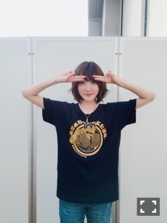
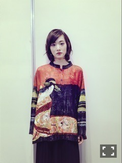
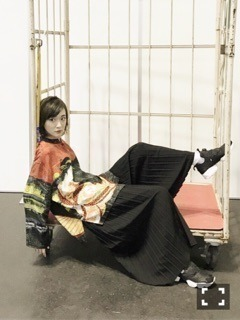
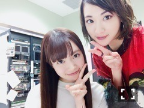

| 2016/10 03 Mon | オリラジさんにもめちゃいいって言われたっ(｡・・｡) |
遂に10月に入りました。
今年もあと3カ月。
私はあと3カ月で21歳。
ハタチですっ

って言える事を思う存分楽しみたいと思います。
昨日までの3日間
京都にて
セブン-イレブン限定ミニライブ
全国握手会
個別握手会
が開催されましたヽ(・∀・)ノ
私は握手会は久しぶりの参加だったし、
乃木坂の生駒ちゃんをストレッチしながら呼び戻し、、
無事ライブを終えました〜ヽ(・∀・)ノ
こち亀やっていたお陰か、
結構踊る曲いっぱいあったのに、
全然ばてなかったの！！
よし！
この調子で身体鍛えるの続けるぞーー！！
そして握手会っ
皆さんお久しぶりでしたね〜ヽ(・∀・)ノ
沢山の方が来てくださって、、
夏のツアーと、こち亀無事の感想を皆さんから直接聞く事が出来て嬉しかったです！！
歌、今後も頑張ろう！！
やばくなったら、えっちゃんに聞きに行こう！！笑
そして、
個別握手会は、

こち亀Tシャツ〜ヽ(・∀・)ノ
このポーズは劇中に出てくるダンスから抜粋。
両さんの眉毛をイメージしているよ(｡・・｡)
そして、
私の趣味大爆発のこのお洋服が凄く好評でしたヽ(・∀・)ノ

握手会の後に
久しぶりにらじらーさんに出演したのですが、
オリラジさんにも褒められて、
なんか褒められまくりの1日でした〜ヽ(・∀・)ノ

このお洋服はずっと大切にしたいなっ
メイクも少し遊んだよっ
レブロンの05番を瞼にも塗ったよ〜
この色すごく使いやすいっっ

中元プロはプロでしたっ！！！
ではっ！！
へばなっ☆彡
コメント(827)
2016/10/03 23:30